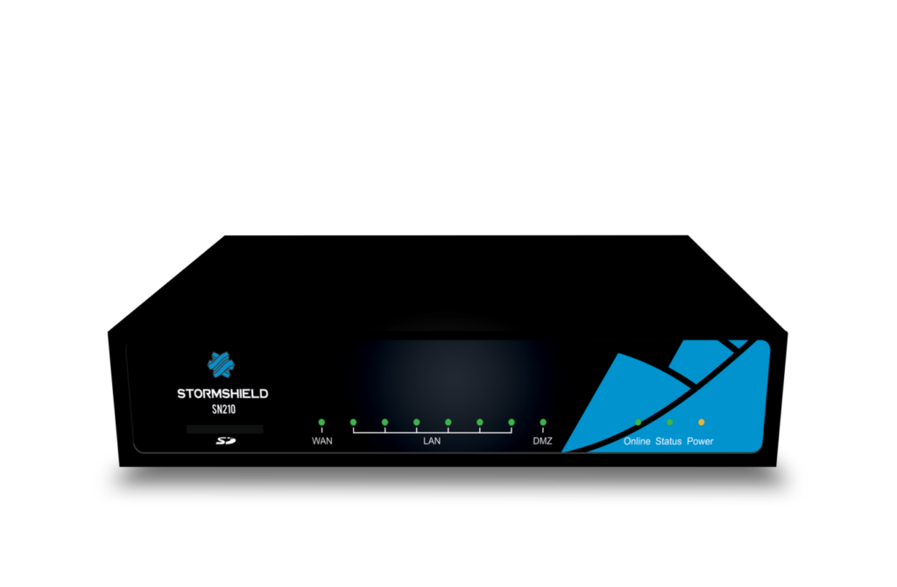
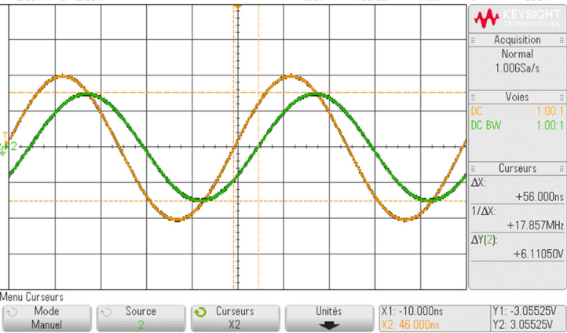

Compétences
Compétences linguistiques
Anglais : niveau B2
Cybersécurité
Apprentissage du pentest à travers des TP : identification de failles, évaluation de la sécurité d’applications, configuration de pare-feux physiques (Stormshield).
Pare-feu Stormshield utilisé en cours
Réseaux
Configuration d’équipements réseau (routeurs, switchs), base de l’administration système, étude du protocole Telnet et de ses failles grâce à Wireshark.

Illustration du protocole Telnet
Programmation
Langages : Java, PHP, JavaScript, MySQL, Python, BASH, HTML/CSS. Projet réalisé : application Android de messagerie avec profil, photo et système de chat en Java (Android Studio).
Télécommunications
Analyse de signaux, électricité, TP de mesure du temps de propagation d’un signal via câble coaxial (oscilloscope).
Retard du signal dans un câble coaxial de 100 mètres
Téléphonie
Étude des réseaux téléphoniques RTC/IP, protocole SIP, configuration d’équipements IPBX, softphones, call servers, etc.
Qualités
- Enthousiasme : favorise la motivation dans les projets de groupe.
- Rigueur : indispensable pour manipuler des équipements et suivre les procédures.
- Ouverture d'esprit : facilitée par les nombreux travaux en binôme ou en groupe.
- Créativité : utile pour résoudre des problèmes sans solution évidente ou toute faite.